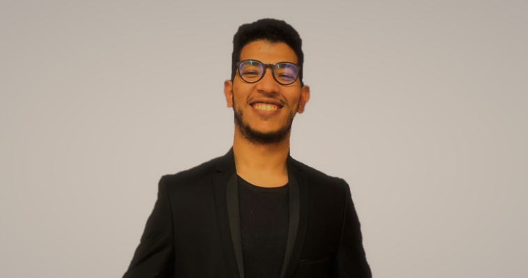

OUICH Jalaleddine

Un jeune ingénieur sociable, dynamique , sérieux et curieux avec une grande capacité d'adaptation.
Information personnelles
- 25 ans
- 499 rue de la pacaterie, 91400 ORSAY
- +33753493771
- ouich.jallal@gmail.com
Diplômes et attestations
2020 - : Diplôme d'ingénieur en Instrumentation (en cours)
2018 - 2020 : Master spécialisé en Instrumentation Biomédical
2015 - 2017 : Licence IEEA
Compétences
-Langues : Arabe – Français – Anglais (niveau d’étude).
-Logiciels maîtrisés : Matlab, Tia Portal V13, Step7, WinCC.
-Programmation : Language C/C++, ASSEMBLY, HTML, VHDL.